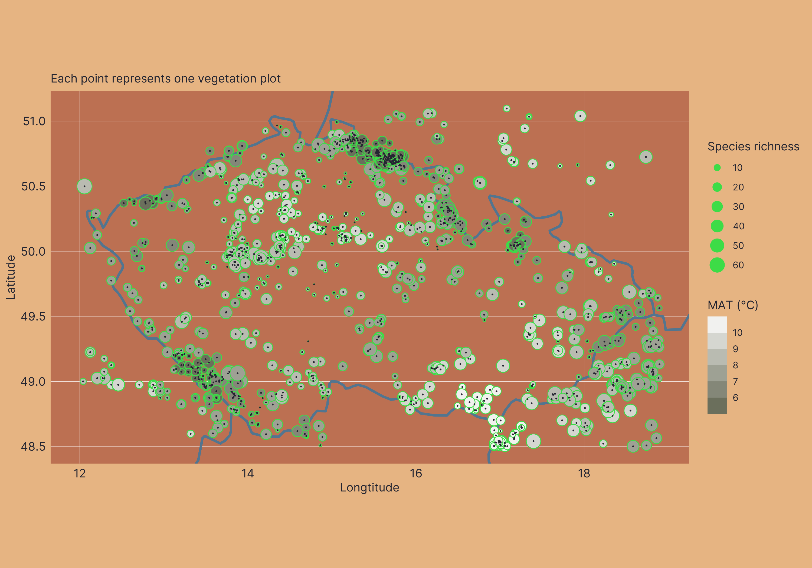

VegVault Usage Examples
Introduction to {vaultkeepr}
To make VegVault as accessible as possible, we developed {vaultkeepr}, a comprehensive R package providing intuitive functions for interacting with the database. The package handles database connections, data filtering, and extraction, allowing you to retrieve only project-specific data without loading everything into memory. With >95% code coverage, {vaultkeepr} is a well-tested interface for VegVault.
Installation & Setup
Install {vaultkeepr} from GitHub:
# install.packages("remotes")
remotes::install_github("OndrejMottl/vaultkeepr")Load the package:
library(vaultkeepr)Data Extraction Workflow
The following diagram illustrates the systematic workflow for accessing and extracting data from VegVault using {vaultkeepr}:

Key Workflow Steps:
- Download VegVault database and install {vaultkeepr}
- Select Dataset Types: Choose from
vegetation_plot,fossil_pollen_archive,traits, orgridpoints - Geographic Filtering: Define spatial extent using
vaultkeepr::select_dataset_by_geo() - Temporal Filtering: Set age ranges with
vaultkeepr::select_samples_by_age() - Add Data Attributes:
- Taxa data: Use
vaultkeepr::get_taxa()with taxonomic harmonization options - Trait data: Use
vaultkeepr::get_traits()and filter by trait domains - Abiotic data: Use
vaultkeepr::get_abiotic_data()with spatial-temporal linking options
- Taxa data: Use
- Extract & Citation: Use
vaultkeepr::extract_data()andvaultkeepr::get_references()
Practical Examples
The following examples demonstrate VegVault’s capabilities across different research scenarios. Note that these examples focus on data extraction rather than analysis—they show how to obtain properly formatted datasets for your research projects.
Example 1: Spatiotemporal patterns of the Picea genus across North America since the LGM
The first example demonstrates how to retrieve data for the genus Picea across North America by selecting both modern and fossil pollen plot datasets, filtering samples by geographic boundaries and temporal range (0 to 15,000 yr BP), and harmonizing taxa to the genus level. The resulting dataset allows users to study spatiotemporal patterns of Picea distribution over millennia. This can be accomplished by running the following code:
data_na_plots_picea <-
# Access the VegVault
vaultkeepr::open_vault(path = "<path_to_VegVault>") %>%
# Start by adding dataset information
vaultkeepr::get_datasets() %>%
# Select both modern and paleo plot data
vaultkeepr::select_dataset_by_type(
sel_dataset_type = c(
"vegetation_plot",
"fossil_pollen_archive"
)
) %>%
# Limit data to North America
vaultkeepr::select_dataset_by_geo(
lat_lim = c(22, 60),
long_lim = c(-135, -60)
) %>%
# Add samples
vaultkeepr::get_samples() %>%
# Limit the samples by age
vaultkeepr::select_samples_by_age(
age_lim = c(0, 15e3)
) %>%
# Add taxa & classify all data to a genus level
vaultkeepr::get_taxa(classify_to = "genus") %>%
# Extract only Picea data
vaultkeepr::select_taxa_by_name(sel_taxa = "Picea") %>%
vaultkeepr::extract_data()Now, we plot the presence of Picea in each 2500-year bin.

Example 2: Joined Species Distribution model for all vegetation within Czechia
In the second example, the project aims to do species distribution modelling for plant taxa in the Czech Republic based on contemporary vegetation plot data and mean annual temperature. The code includes selecting datasets and extracting relevant abiotic data as followed:
data_cz_modern <-
# Acess the VegVault file
vaultkeepr::open_vault(path = "<path_to_VegVault>") %>%
# Add the dataset information
vaultkeepr::get_datasets() %>%
# Select modern plot data and climate
vaultkeepr::select_dataset_by_type(
sel_dataset_type = c(
"vegetation_plot",
"gridpoints"
)
) %>%
# Limit data to Czech Republic
vaultkeepr::select_dataset_by_geo(
lat_lim = c(48.5, 51.1),
long_lim = c(12, 18.9)
) %>%
# Add samples
vaultkeepr::get_samples() %>%
# select only modern data
vaultkeepr::select_samples_by_age(
age_lim = c(0, 0)
) %>%
# Add abiotic data
vaultkeepr::get_abiotic_data() %>%
# Select only Mean Anual Temperature (bio1)
vaultkeepr::select_abiotic_var_by_name(sel_var_name = "bio1") %>%
# add taxa
vaultkeepr::get_taxa() %>%
vaultkeepr::extract_data()Now we can simply plot both the climatic data and the plot vegetation data:

Example 3: Patterns of plant height (CWM) for South and Central Latin America between 6-12 ka
The third example focuses on obtaining data to be able to reconstruct plant height for South and Central America between 6-12 ka cal yr BP (thousand years before present). This example project showcases the integration of trait data with paleo-vegetation records to subsequently study historical vegetation dynamics and functional composition of plant communities:
data_la_traits <-
# Acess the VegVault file
vaultkeepr::open_vault(path = "<path_to_VegVault>") %>%
# Add the dataset information
vaultkeepr::get_datasets() %>%
# Select modern plot data and climate
vaultkeepr::select_dataset_by_type(
sel_dataset_type = c(
"fossil_pollen_archive",
"traits"
)
) %>%
# Limit data to South and Central America
vaultkeepr::select_dataset_by_geo(
lat_lim = c(-53, 28),
long_lim = c(-110, -38),
sel_dataset_type = c(
"fossil_pollen_archive",
"traits"
)
) %>%
# Add samples
vaultkeepr::get_samples() %>%
# Limit to 6-12 ka yr BP
vaultkeepr::select_samples_by_age(
age_lim = c(6e3, 12e3)
) %>%
# add taxa & clasify all data to a genus level
vaultkeepr::get_taxa(classify_to = "genus") %>%
# add trait information & clasify all data to a genus level
vaultkeepr::get_traits(classify_to = "genus") %>%
# Only select the plant height
vaultkeepr::select_traits_by_domain_name(sel_domain = "Plant heigh") %>%
vaultkeepr::extract_data()Now let’s plot the overview of the data
Additional Resources
- Database Access - Download and setup instructions
- Database Assembly - Data processing and integration procedures
- Database Structure - Technical database documentation
- Database Content - Overview of available data
- {vaultkeepr} Documentation - Complete function reference